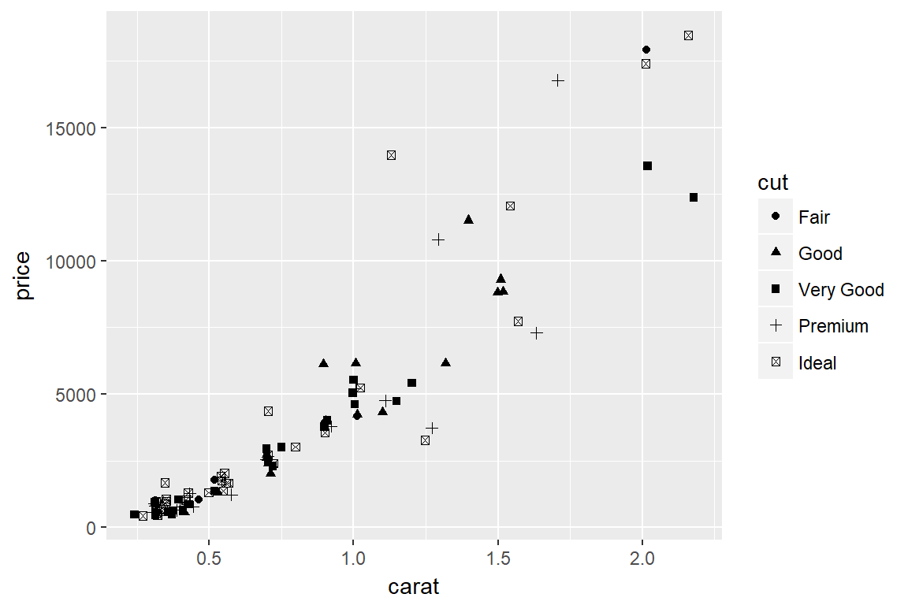
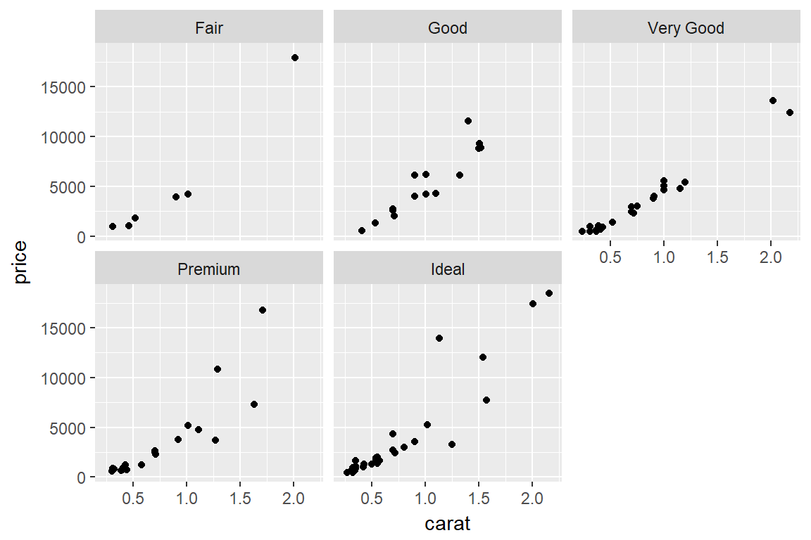
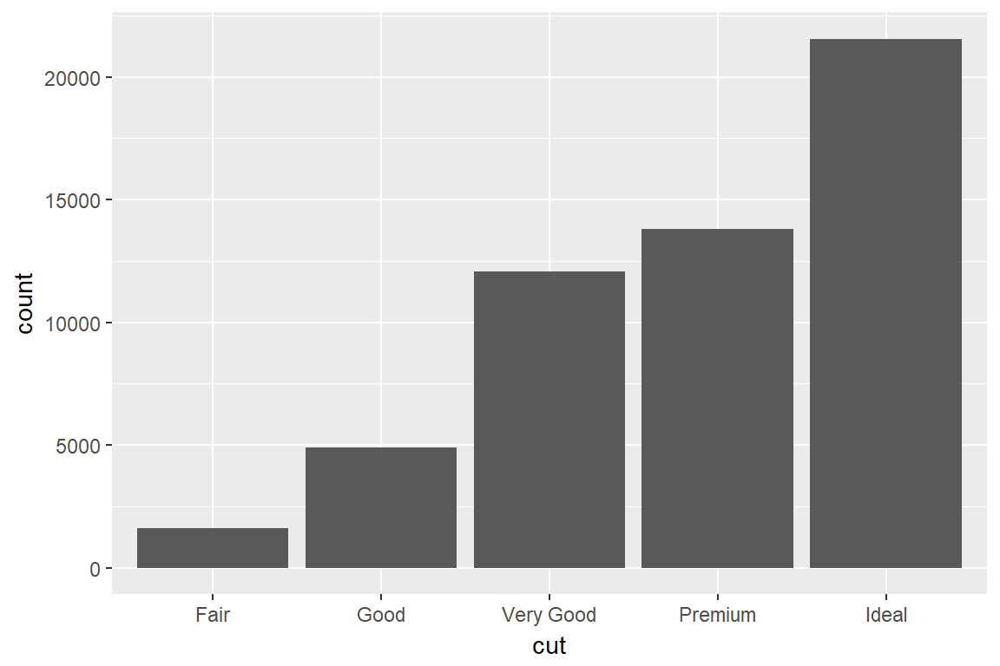
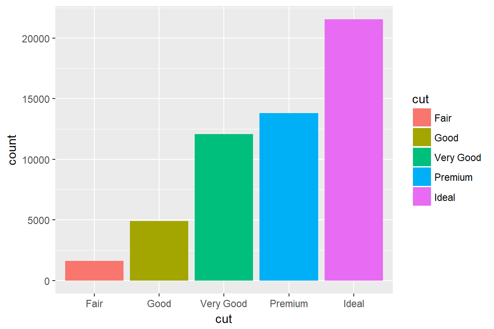
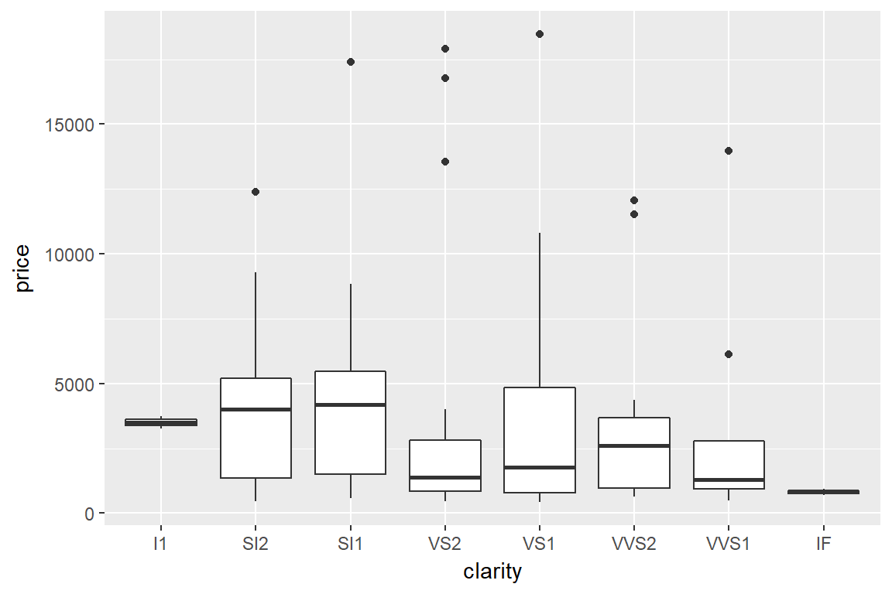
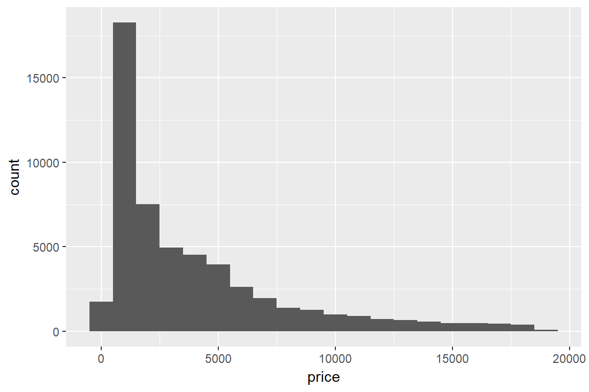
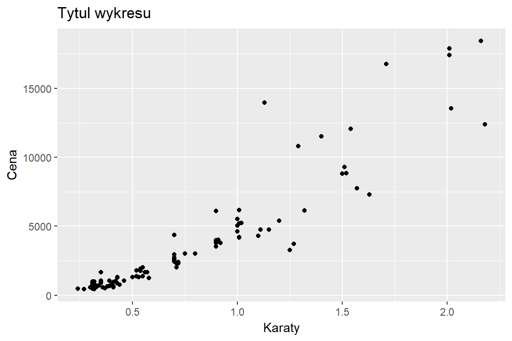
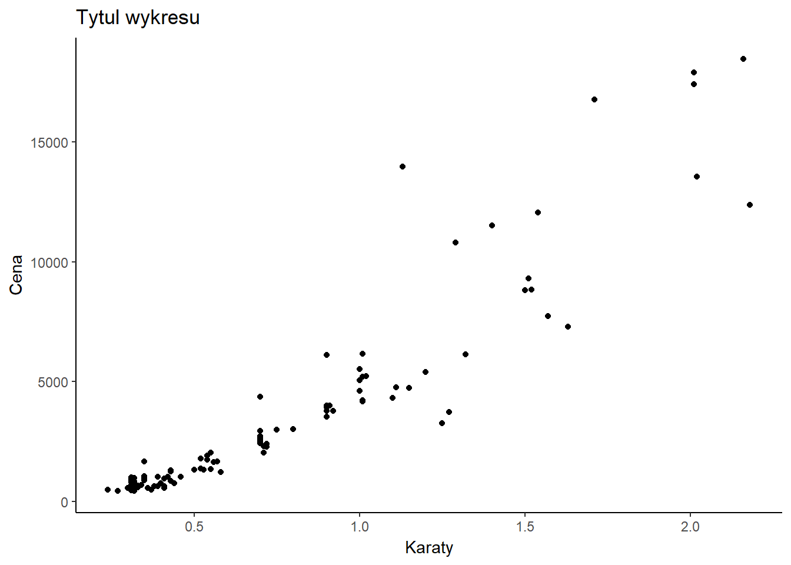

TIPN 4 - Import danych, tidyverse, wykresy w ggplot2
Krzysztof Basiński
library(tidyverse)## ── Attaching packages ────────────────────────────────────────────────── tidyverse 1.2.1 ──## ✔ ggplot2 2.2.1 ✔ purrr 0.2.4
## ✔ tibble 1.4.2 ✔ dplyr 0.7.4
## ✔ tidyr 0.8.0 ✔ stringr 1.3.0
## ✔ readr 1.1.1 ✔ forcats 0.3.0## ── Conflicts ───────────────────────────────────────────────────── tidyverse_conflicts() ──
## ✖ dplyr::filter() masks stats::filter()
## ✖ dplyr::lag() masks stats::lag()library(knitr)Tidyverse
Tidyverse

Hadley Wickham

Fajne rzeczy, które robi Hadley
- R for Data Science
- Advanced R
- Tidyverse
- i wiele innych - Hadley @ github
Tidyverse
- Tidyverse to zbiór paczek wymyślonych po to, by praca z
Rbyła lekka, łatwa i przyjemna:- readr - import danych
- ggplot2 - wykresy
- dplyr - grzebanie w danych
- tibble - fajne tabelki
- tidyr - tidy data
- purrr - programowanie funkcjonalne
Instalacja
install.packages("tidyverse")Ładowanie
library(tidyverse)Import danych
Możemy do R importować wszelkiego rodzaju dane:
- csv
- xlsx
- bazy danych
- json
- i wiele innych
CSV - comma separated values
- Zwykły plik tekstowy
- Najprostszy format zapisu danych tabelarycznych
- Kolumny oddzielone przecinkami, srednikami, dwukropkami…
- Wiersze oddzielone znakiem nowej linii
- Wszystkie programy do analizy danych otwierają pliki csv
CSV - przykład
year;population;violent_crime;mansloughter;rape;robbery;assault;property_crime;burglary;larceny;gta
1994;260327021.00;1857670.00;23326.00;102216.00;618949.00;1113179.00;12131873.00;2712774.00;7879812.00;1539287.00
1995;262803276.00;1798792.00;21606.00;97470.00;580509.00;1099207.00;12063935.00;2593784.00;7997710.00;1472441.00
1996;265228572.00;1688540.00;19645.00;96252.00;535594.00;1037049.00;11805323.00;2506400.00;7904685.00;1394238.00
1997;267783607.00;1636096.00;18208.00;96153.00;498534.00;1023201.00;11558475.00;2460526.00;7743760.00;1354189.00
...CSV - przykład
| year | population | violent_crime | mansloughter | rape | robbery |
|---|---|---|---|---|---|
| 1994 | 260327021 | 1857670 | 23326 | 102216 | 618949 |
| 1995 | 262803276 | 1798792 | 21606 | 97470 | 580509 |
| 1996 | 265228572 | 1688540 | 19645 | 96252 | 535594 |
| 1997 | 267783607 | 1636096 | 18208 | 96153 | 498534 |
| 1998 | 270248003 | 1533887 | 16974 | 93144 | 447186 |
| 1999 | 272690813 | 1426044 | 15522 | 89411 | 409371 |
Import csv/xls/xlsx do R

ggplot2
ggplot2

Zbiór danych diamonds
diamonds## # A tibble: 53,940 x 10
## carat cut color clarity depth table price x y z
## <dbl> <ord> <ord> <ord> <dbl> <dbl> <int> <dbl> <dbl> <dbl>
## 1 0.230 Ideal E SI2 61.5 55. 326 3.95 3.98 2.43
## 2 0.210 Premium E SI1 59.8 61. 326 3.89 3.84 2.31
## 3 0.230 Good E VS1 56.9 65. 327 4.05 4.07 2.31
## 4 0.290 Premium I VS2 62.4 58. 334 4.20 4.23 2.63
## 5 0.310 Good J SI2 63.3 58. 335 4.34 4.35 2.75
## 6 0.240 Very Good J VVS2 62.8 57. 336 3.94 3.96 2.48
## 7 0.240 Very Good I VVS1 62.3 57. 336 3.95 3.98 2.47
## 8 0.260 Very Good H SI1 61.9 55. 337 4.07 4.11 2.53
## 9 0.220 Fair E VS2 65.1 61. 337 3.87 3.78 2.49
## 10 0.230 Very Good H VS1 59.4 61. 338 4.00 4.05 2.39
## # ... with 53,930 more rowsZbiór danych diamonds
str(diamonds)## Classes 'tbl_df', 'tbl' and 'data.frame': 53940 obs. of 10 variables:
## $ carat : num 0.23 0.21 0.23 0.29 0.31 0.24 0.24 0.26 0.22 0.23 ...
## $ cut : Ord.factor w/ 5 levels "Fair"<"Good"<..: 5 4 2 4 2 3 3 3 1 3 ...
## $ color : Ord.factor w/ 7 levels "D"<"E"<"F"<"G"<..: 2 2 2 6 7 7 6 5 2 5 ...
## $ clarity: Ord.factor w/ 8 levels "I1"<"SI2"<"SI1"<..: 2 3 5 4 2 6 7 3 4 5 ...
## $ depth : num 61.5 59.8 56.9 62.4 63.3 62.8 62.3 61.9 65.1 59.4 ...
## $ table : num 55 61 65 58 58 57 57 55 61 61 ...
## $ price : int 326 326 327 334 335 336 336 337 337 338 ...
## $ x : num 3.95 3.89 4.05 4.2 4.34 3.94 3.95 4.07 3.87 4 ...
## $ y : num 3.98 3.84 4.07 4.23 4.35 3.96 3.98 4.11 3.78 4.05 ...
## $ z : num 2.43 2.31 2.31 2.63 2.75 2.48 2.47 2.53 2.49 2.39 ...Zbiór danych diamonds
?diamondsWybierz tylko 100 pierwszych diamentów
# wybierz tylko pierwszych 100 diamentów
# przyspieszy to trochę obliczenia i sprawi, że
# wykresy będą bardziej przejrzyste
sto_diam <- diamonds[sample(nrow(diamonds), 100),]Wykres punktowy (scatterplot)
ggplot(data = sto_diam) + # Uwaga! + MUSI być na końcu linii!
geom_point(mapping = aes(x = carat, y = price))color = cut
ggplot(data = sto_diam) +
geom_point(mapping = aes(x = carat, y = price, color = cut))position = "jitter"
ggplot(data = sto_diam) +
geom_point(mapping = aes(x = carat, y = price, shape = cut),
position = "jitter")
facets
ggplot(data = sto_diam) +
geom_point(mapping = aes(x = carat, y = price)) +
facet_wrap(~ cut, nrow = 2)
geom_smooth
ggplot(data = sto_diam) +
geom_smooth(mapping = aes(x = carat, y = price))łączenie geomów
ggplot(data = sto_diam, mapping = aes(x = carat, y = price)) +
geom_point() +
geom_smooth()Wykres słupkowy - barplot
ggplot(data = diamonds) +
geom_bar(mapping = aes(x = cut))
Kolorowy barplot
ggplot(data = diamonds) +
geom_bar(mapping = aes(x = cut, fill = cut))
position = "fill"
ggplot(data = diamonds) +
geom_bar(mapping = aes(x = cut, fill = color), position = "fill")position = "dodge"
ggplot(data = diamonds) +
geom_bar(mapping = aes(x = cut, fill = color), position = "dodge")Wykres kolumnowy - geom_col
ggplot(data = diamonds) +
geom_col(mapping = aes(x = clarity, y = mean(price)))Ramka/wąsy - boxplot
ggplot(data = sto_diam, aes(x = clarity, y = price)) +
geom_boxplot()
Ramka/wąsy - na opak
ggplot(data = sto_diam, aes(x = clarity, y = price)) +
geom_boxplot() +
coord_flip()Histogram
ggplot(data = diamonds) +
geom_histogram(mapping = aes(price), binwidth = 1000)
Nazwy osi
ggplot(data = sto_diam) +
geom_point(mapping = aes(x = carat, y = price)) +
labs(title = "Tytuł wykresu", x = "Karaty", y = "Cena")
Wygląd - themes
ggplot(data = sto_diam) +
geom_point(mapping = aes(x = carat, y = price)) +
labs(title = "Tytuł wykresu", x = "Karaty", y = "Cena") +
theme_minimal()Wygląd - themes
ggplot(data = sto_diam) +
geom_point(mapping = aes(x = carat, y = price)) +
labs(title = "Tytuł wykresu", x = "Karaty", y = "Cena") +
theme_dark()Wygląd - themes
ggplot(data = sto_diam) +
geom_point(mapping = aes(x = carat, y = price)) +
labs(title = "Tytuł wykresu", x = "Karaty", y = "Cena") +
theme_light()Wygląd - themes
ggplot(data = sto_diam) +
geom_point(mapping = aes(x = carat, y = price)) +
labs(title = "Tytuł wykresu", x = "Karaty", y = "Cena") +
theme_classic()
To nie wszystko! Oj nie!
To nie wszystko!

To nie wszystko!

To nie wszystko!